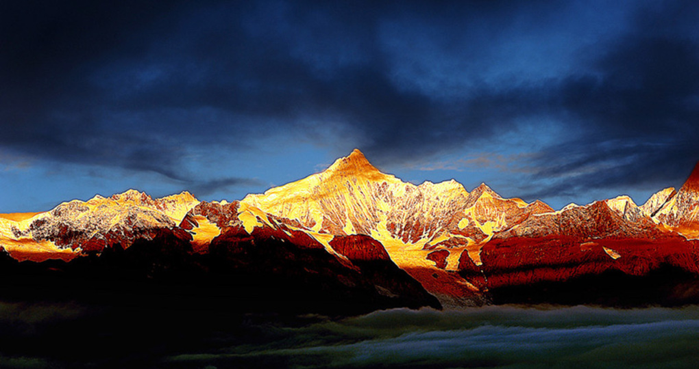
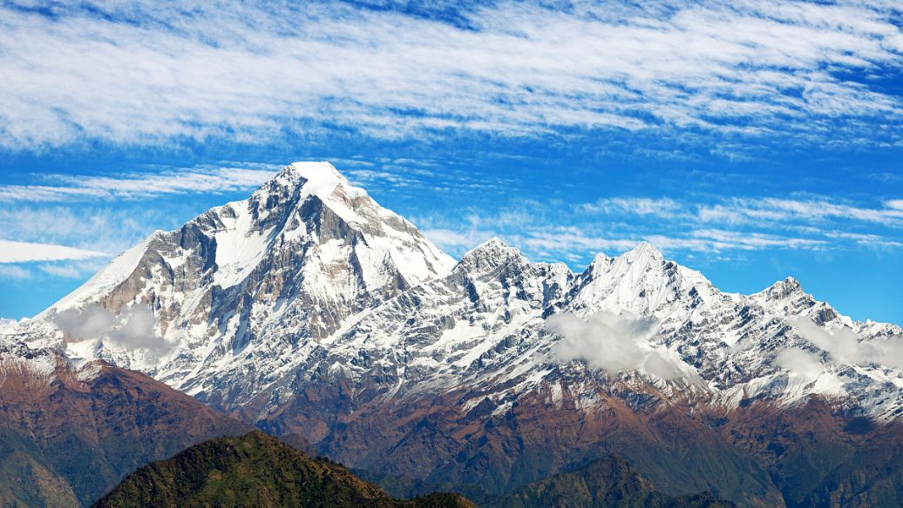

梅里雪山，是位于西藏察隅县东部与云南迪庆藏族自治州德钦县境云岭乡西部的一座南北走向的庞大的雪山群，全长有150公里。它在藏区称卡瓦格博雪山，“梅里”一词为德钦藏语mainri汉译，意思是药山，因盛产各种名贵药材而得名。同时它也是雍仲苯教圣地，和西藏的冈仁波齐、青海的阿尼玛卿山、青海的尕朵觉沃并称为藏传佛教四大神山。
最高峰卡瓦格博峰海拔高度为6740米，是云南省最高的山峰，位于德钦县西南方10千米处，距中甸县城184千米。长约30公里，其中呈金字塔状的最高峰为卡瓦格博峰，海拔6740米，为突出于周围群山山顶面近千米的极高山，是云南省的最高峰。梅里雪山断裂活动强烈地势高耸，有13座海拔6000米以上高峰在卡瓦格博峰周边环绕，是青藏高原东南缘最高山。

梅里雪山属青藏高原东南缘、澜沧江与怒江之间的滇藏边界的怒山山脉，北与西藏境内的他念他恩山相连， 南接云南省怒江州贡山县的碧罗雪山；境内最高海拔为6740m的云南省第一峰-卡瓦格博峰，最低海拔为澜沧江江边查里通与燕门乡交界处900m，相对高差达5840m。
太子雪山主峰卡瓦格博，藏语“白色雪山”之意，俗称“雪山之神”。传说梅里雪山原是九头十八臂的凶恶煞神，后被莲花生大师教化，受居士戒，皈依佛门，做了千佛之子领乃制敌宝珠雄师大王格萨尔麾下一员神将，从此统领边地，福荫雪域。卡瓦格博神像常常被供奉在神坛之上，他身骑白马，手持长剑，威风凛凛，俨然一位保护神。

卡瓦格博和其周围诸峰，虽称“十三峰”，但语意是取“十三”这个藏语里的吉祥数，其实不是准确的十三个雪峰，而是较多山峰的统称。诸峰中较有名的有面茨姆峰、吉娃仁安峰、布迥松阶吾学峰、玛兵扎拉旺堆峰、粗归腊卡峰、说拉赞归面布峰。其中线条优美的面茨姆峰，意为大海卡瓦格博峰神女，位于卡瓦格博峰南侧。传说中，此峰为卡瓦格博峰之妻。卡瓦格博随格萨尔王远征恶罗海国，恶罗海国想蒙蔽他们，将面茨姆假意许配给卡瓦格博，不料卡瓦格博与面茨姆互相倾心，永不分离。又有人传说面茨姆为玉龙雪山之女，虽为卡瓦格博之妻，却心念家乡，面向家乡。雪峰总有云雾缭绕，人们称其为面茨姆含羞而罩的面纱。意为“五佛之冠”的吉娃仁安峰，是并列排立的五个扁平而尖削的山峰，位于面茨姆峰北侧，海拔5770.5米。而传说为卡瓦格博和面茨姆所生的儿子的布迥松阶吾学峰，则位于五佛冠峰与卡瓦格博峰之间。卡瓦格博东北方向的守护神就指玛兵扎拉旺堆峰，又称“无敌降魔战神”（将军峰）。粗归腊卡意为圆湖上方的山峰，位于斯恰冰川的冰斗上方。